20 candidates for Emmet's technique library (session 3C, H-22). Each was found in your instruction books and ranked by how widely official models in the LDraw OMR join its key parts (1318 sets mined). Each picture is a render of my sketch of it in Emmet's DSL, which validates with no findings; an accepted sketch becomes the technique, with its tests and render, and a rejected one is dropped. Nothing is taken from the models' files or the books' pages (D-48). Every candidate starts as Accept: switch the ones you don't want, add a note if it helps, then copy your answers and paste them to Claude.
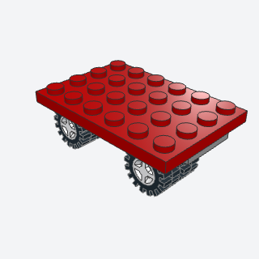
wheel_axleA pair of wheels on a plate with two wheel pins, built into the bottom layer of a chassis.
Every small car, truck, or trailer stands on these; the wheels sit on pins, not on loose axles.
x, y, z, color, wheelbatch-2/wheel_axle.py4870 + 4624c01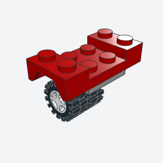
wheel_archA mudguard over a pair of wheels, so the body clears them and the arch shows round over each wheel.
A mudguard over each axle lets the body sit low with the wheels showing, the way town cars are built.
x, y, z, colorbatch-2/wheel_arch.py3788 + 4870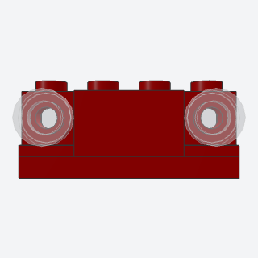
headlightsA vehicle's lights in its front face, headlight bricks with round clear tiles on their front studs.
Lights in the front face of a car or truck, recessed in headlight bricks.
x, y, z, width, color, lensbatch-2/headlights.py4070 + 98138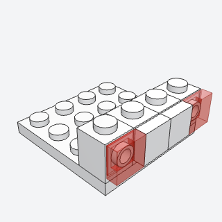
tail_lightsRed lights in a vehicle's back face, on bricks with a stud on one side, with tiles flush between them.
A smooth back with red lights at its corners, all on studs that face backward.
x, y, z, width, color, lensbatch-2/tail_lights.py87087 + 3070b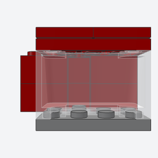
windscreenA sloped windscreen on a vehicle's cab, with a roof of tiles over it.
The sloped windscreen and roof of a car's or truck's cab.
x, y, z, color, roofbatch-2/windscreen.py3823 + 3031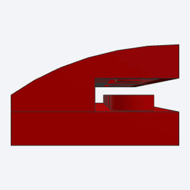
curved_hoodA vehicle's hood that rounds down to the front, curved slopes on a plate.
A hood that rounds down to the front instead of ending in a step.
x, y, z, width, length, colorbatch-2/curved_hood.py15068 + 3022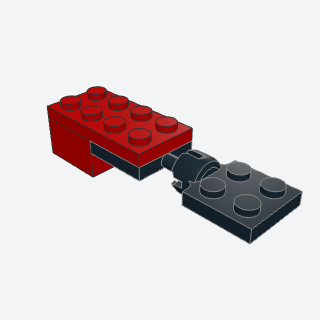
trailer_hitchA tow ball under the back of a vehicle and a socket on a trailer's drawbar, so the trailer swings.
Lets a trailer or caravan swing behind the car that tows it.
x, y, z, colorbatch-2/trailer_hitch.py3731 + 3730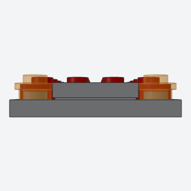
front_bumperA bumper that stands out across a vehicle's front, a plate under the front edge with a tile on top and round indicator lights at its ends.
A bumper that stands out from the front with indicator lights at its ends.
x, y, z, width, color, lightbatch-2/front_bumper.py3020 + 6141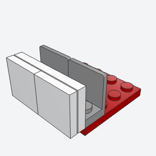
bracket_side_panelA vehicle's smooth side, a panel of plate and tiles built lying flat and pressed onto brackets whose studs face out.
Smooth, flush sides on a vehicle: the truck book's most-used method.
x, y, z, length, color, panelbatch-2/bracket_side_panel.py99207 + 3020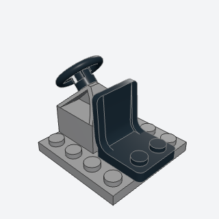
cab_seatA driver's seat with a steering wheel in front of it, on a cab's floor.
A driver's seat and steering wheel for any cab or car.
x, y, z, colorbatch-2/cab_seat.py30640 + 4079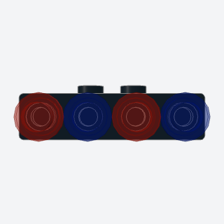
light_barA row of lamps along a vehicle's roof edge, round plates on a bracket whose face hangs over the edge.
Lamps along a roof's edge for emergency vehicles, buses, and trucks.
x, y, z, color, lampsbatch-2/light_bar.py2436b + 6141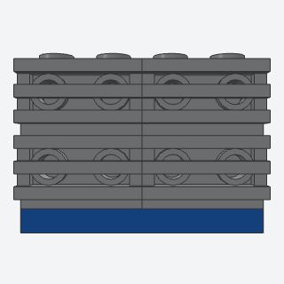
front_grilleA truck's grille, grille tiles on bricks whose studs face the front, between the headlights.
A truck's grille, smooth and ribbed, between its headlights.
x, y, z, width, rows, color, grillebatch-2/front_grille.py11211 + 2412b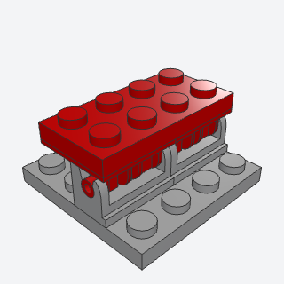
tilting_hoodA hood on hinge bricks, so the whole nose of a vehicle tips up to show the engine.
A nose that tips up on hinges to show the engine, a favorite play feature.
x, y, z, width, colorbatch-2/tilting_hood.py3937 + 6134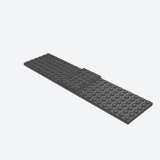
spliced_chassisA long chassis from two plates butted end to end, locked by plates across the seam.
A chassis longer than any single plate, locked across the joint so it doesn't bend.
x, y, z, length, width, colorbatch-2/spliced_chassis.py3028 + 3020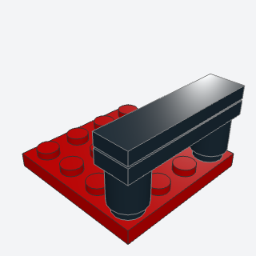
rear_spoilerA wing over the back of a car, a tile on a plate held up on two small posts.
A wing over the back of a sports or race car.
x, y, z, width, colorbatch-2/rear_spoiler.py3062b + 3710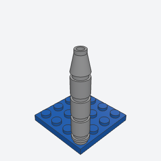
exhaust_stackA truck's upright exhaust pipe beside its cab, round bricks on a bracket with a cone on top.
A truck's upright exhaust pipe beside the cab.
x, y, z, rows, colorbatch-2/exhaust_stack.py3062b + 4589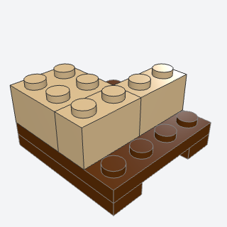
cargo_palletA pallet with slots underneath for a forklift's forks, with crates stacked on it.
Loads for trucks, forklifts, warehouses, and station platforms.
x, y, z, color, cratebatch-2/cargo_pallet.py3710 + 3031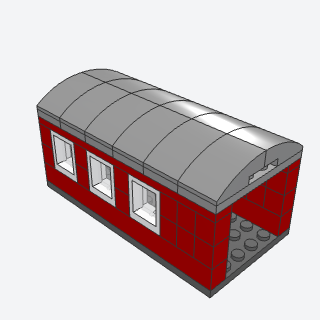
train_carriageA 6-wide passenger carriage's body on a train base, window bands along both sides, doors at the ends, and a roof that curves down at its edges.
A passenger carriage for a train set, with window bands and a round roof.
x, y, z, length, color, window, roofbatch-2/train_carriage.py60592 + 24309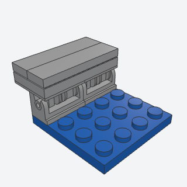
hinged_tailgateA truck bed's tailgate on hinge bricks, so it folds down.
A pickup's or trailer's tailgate that folds down.
x, y, z, width, colorbatch-2/hinged_tailgate.py3937 + 6134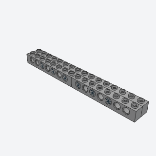
technic_spineA long, stiff beam of two rows of Technic bricks side by side, their joints offset, pinned together through their holes, so it can't bend at a joint.
A long beam that doesn't bend, under trailers, cranes, and long floors.
x, y, z, length, colorbatch-2/technic_spine.py3702 + 2780